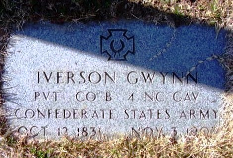

|
|
| 
Iverson Rice GWYN (1831-1907) |
Iverson Rice GWYN
PARENTS: Son of Hugh M. (b. 21 May 1791) and Nancy Gwynn
Find A Grave, Memorial # 53033137 Iverson married Mary Elizabeth SOMERS, daughter of Jacob Franklin SOMERS and Mary Ann Paisley HANNAH, on 2 Feb 1860. (Mary Elizabeth SOMERS was born on 1 Sep 1841 in Alamance County, North Carolina, died on 29 Dec 1914 in Caswell County, North Carolina and was buried in Camp Springs United Methodist Church Cemetery, Caswell County, NC.) |
 General Notes:
General Notes: